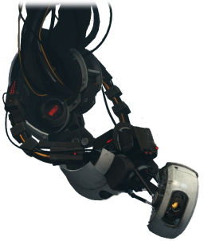

Video Game Character Tier List
1. Steve
Popularity - From the popular game minecraft, is the player charcter and the most iconic skin avalible.

2. GLaDOS
Popularity - Antagonist from the game series Portal One and Portal Two who is superintelligent computer.

3. Pikachu
Popularity -

4. Master Cheif
Popularity -

5. Mario
Popularity -

6. Pacman
Popularity -

7. Tom Nook
Popularity - A character from Nintendo Entertainment, Animal Crossing works on the islanders shop.
8. Sage
Popularity - A support character in the game VALORANT who can bring her team mates back with her ultinate, Resurrection

9. Link
Popularity - Is the main protagonist who is chosen by the goddess Hylia from the Zelda games published by Nintendo.

10. Chun-Li
Popularity - Is a undercover Interpol who was orginally indroduce in Street Fighter II: The World Warrior in 1991. She is the first female playable character from Capcom.